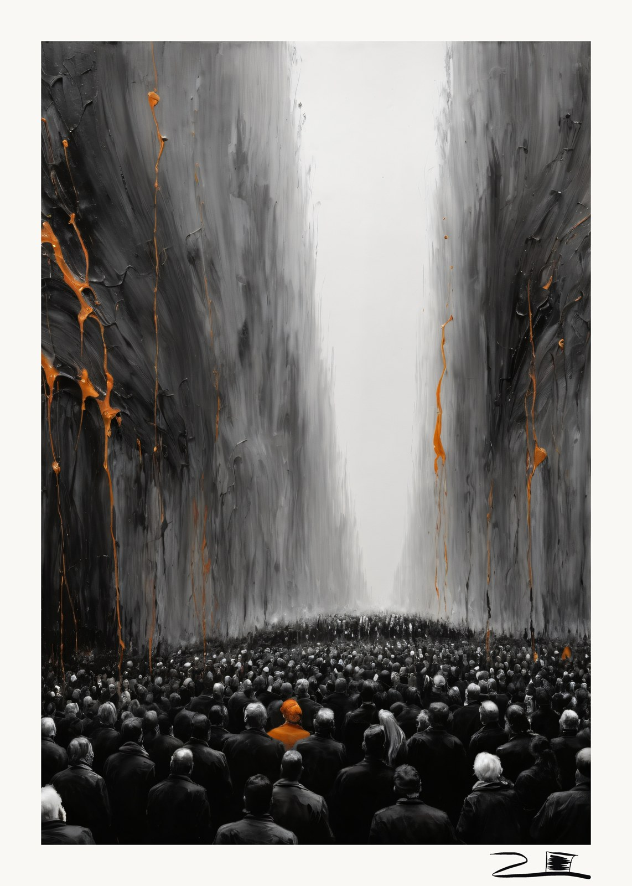

Espectadores
2026
- Técnica
- Técnica mixta. Impresión giclée sobre papel mate de archivo, libre de ácido
- Medidas
- 40 × 60 cm
- Soporte
- Papel mate de archivo libre de ácido
- Edición
- Pieza única. No se volverá a imprimir
- Firma
- Firmada a mano en el margen
- Certificado
- Incluido, numerado y verificable
Pieza única · 1 de 1
La sociedad mira cómo el mundo avanza hacia lo desconocido sin poder tomar el control.
Cientos de figuras de espaldas, idénticas en su gris, frente a dos muros que las superan hasta hacerlas parecer polvo. Al fondo, la luz que nadie ha decidido encender. Y el color que gotea por la pared, bajando desde arriba, sin pedir permiso: lo nuevo entrando en un mundo que solo acierta a mirarlo.
Una sola figura lleva naranja en la cabeza. Es la única que ha sido tocada por lo que viene. No está más cerca. Solo está manchada.